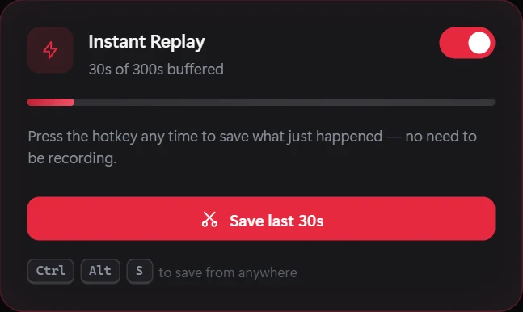
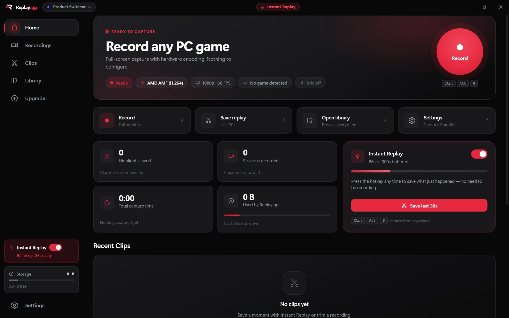
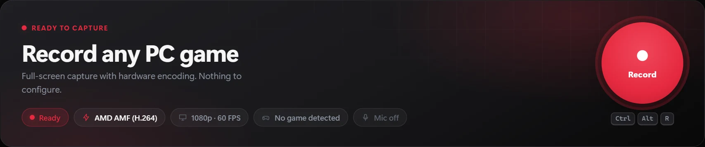
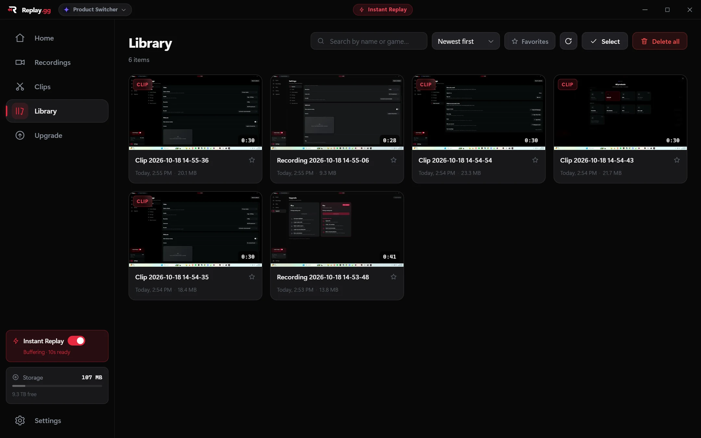

01 / INSTANT REPLAYDidn't hit record?
Didn't hit record?
Still got the clip.
Keep a rolling replay buffer running and save what just happened with a hotkey.
One more round. One impossible shot. That clip everyone needs to see. Replay.gg lets you record full sessions or save the last few seconds without missing a beat.

Replay.gg for WindowsStay focused on the game. Replay.gg handles the capturing, organizing, and replaying.

Keep a rolling replay buffer running and save what just happened with a hotkey.

Record a full gameplay session with adjustable resolution, frame rate, and encoder settings.

Browse recordings and clips in one place, play them back, and trim moments out of recordings.
Set Replay.gg up the way you game — without turning every session into a production.
Start recording, toggle the replay buffer, and save clips while your game has focus.
Choose your display, resolution, FPS, recording quality, and available encoder.
Add your camera to gameplay captures and adjust its position and size.
Configure your mic and system-audio device, including separate audio tracks.
Pick your display and recording preferences. Configure audio and hotkeys if you want.
Record a session or keep Instant Replay on while you play.
Press your replay hotkey, then find the clip in your local library.
Replay.gg currently ships a Windows installer. The code includes macOS and Linux capture paths, but those platforms do not have supported release builds yet.
Download for Windows · v0.5.3 ↓138 MB installer · Windows 10/11 · FFmpeg is included, nothing else to set up. Not yet code-signed, so Windows SmartScreen may show a warning: choose “More info → Run anyway”. All releases